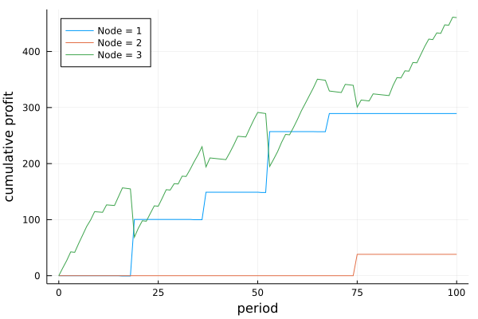
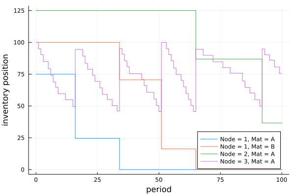
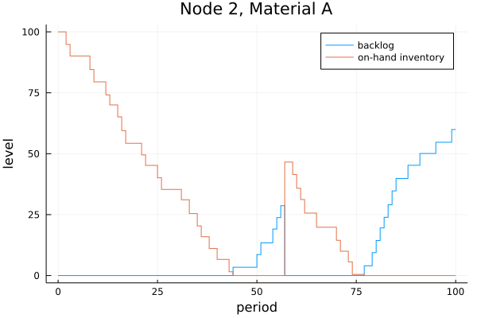

Examples
Example 1
This example is for a 100 period simulation of a supply network with one plant (node 1) that supplies a retailer (node 3), with stochastic demand for product :A. Node 3, has an alternate supplier, which is a distribution center (node 2). Node 3 prefers replenishing from the plant, which has a lower lead time. A (s,S) reorder policy is used at the retailer. When the on-hand level for material :A is depleted at the plant, the plant begins transforming raw material :B into :A. There is limited raw material supply at the plant. When the raw material stocks-out, node 3 switches to node 2 for its supply.
See code here.
 
Example 2
This example is for a 100 period simulation of a supply network with one warehouse (node 1) that supplies a retailer (node 2) with stochastic demand for product :A. A (r,Q) reorder policy is used at the retailer every 25 periods.
See code here.
